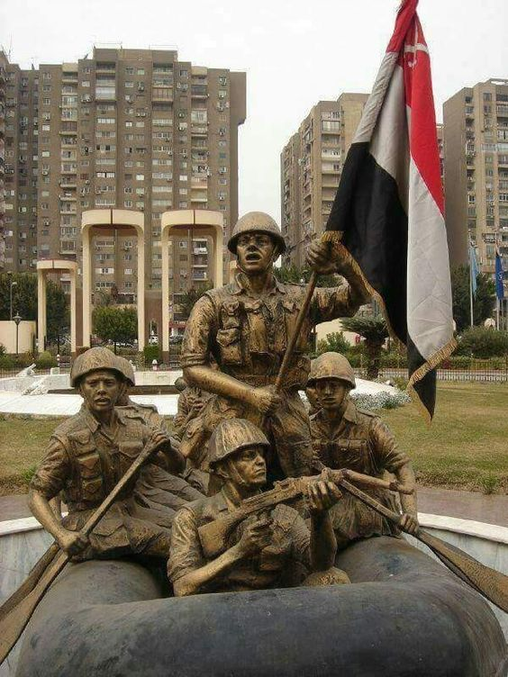
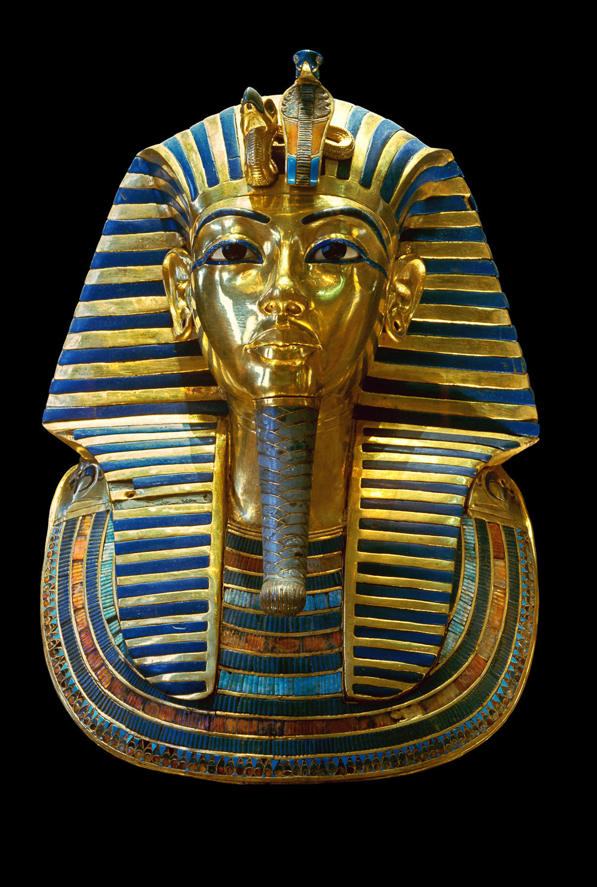

October War
A turmoil occurred between Egypt and the Zionist entity in 1979.

Triple Aggression
A battle in which Egypt was against Britain, France and Israel in 1956.

Tutankhamun
Tutankhamun of the eighteenth dynasty in ancient Egypt ruled and aged 12 years and was killed and aged approximately 18 years (between the years 1332-1323 BC).

The reason for breaking the nose of the Sphinx
The accounts differ about the identity of the person who broke the nose of the Sphinx. There are those who say Napoleon Bonaparte and others say that a Sufi person did this, and there are those who say that the reason for this is erosion and there are many stories about who broke the nose of the Sphinx.